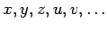
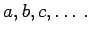
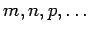

| Beispiel |
|
Koeffizienten treten z.B. in Polynomen, FOURIER-Reihen und linearen Differentialgleichungen auf. |
Ein Ausdruck gehört zu der einen oder anderen Klasse in Abhängigkeit davon, welche Operationen an seinen Hauptgrößen auszuführen sind. Im allgemeinen werden die Hauptgrößen meist mit den letzten Buchstaben des Alphabets  bezeichnet, die Parameter mit den ersten Buchstaben  Die Buchstaben  verwendet man meist für ganzzahlige positive Parameterwerte, z.B. für Indizes bei Summationen und Iterationen.